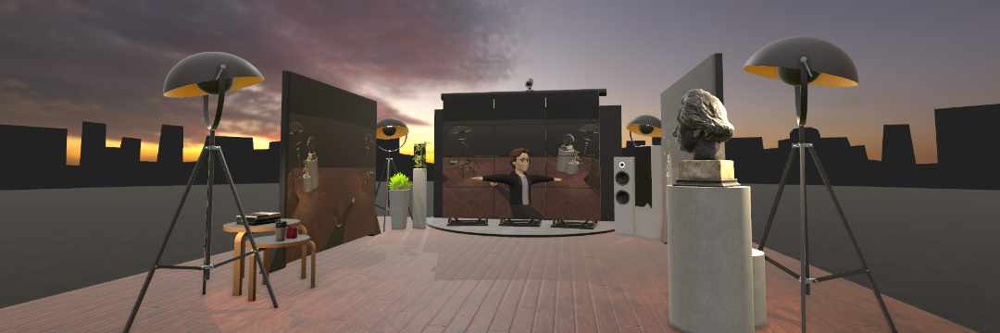

Find yourself in a digital mirror chamber so you can check your customized meta avatar from all angles.
Access the avatar editor directly from the mirror chamber, change your style, and check out your updated avatar as soon as you get back — tweaking every detail of your virtual doppelganger to perfection.
Available for
Quest
Rift / PCVR
Open Source on GitHub